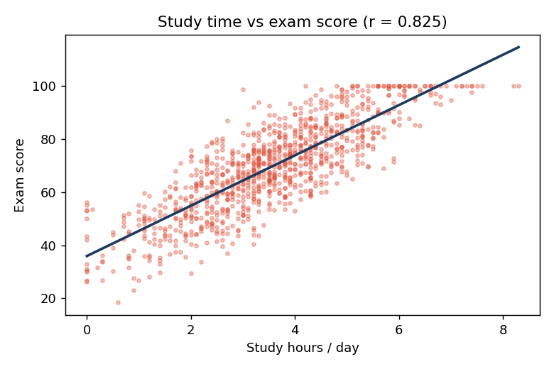
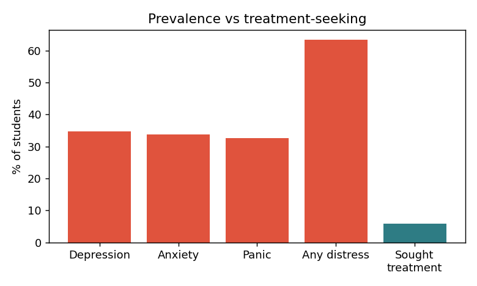
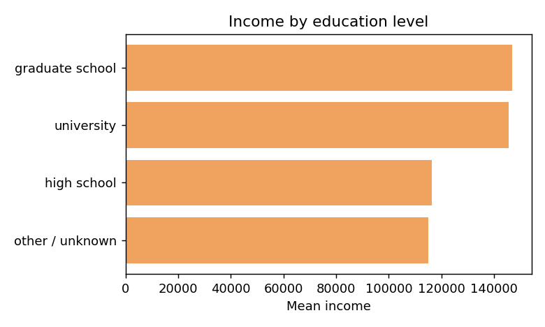

Universities measure students mostly by grades. This project asks whether that is the right lens — bringing together three datasets on study habits, mental health, and socioeconomic outcomes to understand what really drives student success and wellbeing, and where support is missing.
01 — DataThree datasets, three angles
The analysis integrates three sources: a mental-health survey of 101 university students (depression, anxiety, panic, treatment-seeking, demographics); a habits-and-performance dataset of 1,000 students (study time, sleep, screen time, attendance, exam score); and a socioeconomic dataset of 2,000 adults (education and income). Each was cleaned with median imputation, label encoding and standardisation before analysis.
02 — The academic engineStudy time is the lever that matters
Among the habits measured, daily study time has by far the strongest relationship with exam performance — a Pearson correlation of r = 0.825. Mental-health rating shows a modest positive link (r ≈ 0.32), while screen-time variables are weakly negative. Sleep and attendance barely register on their own.

Common distress, rare treatment
The survey tells a starker story. Roughly a third of students reported depression (34.7%), anxiety (33.7%) or panic attacks (32.7%); 63% reported at least one. Yet only 5.9% had sought help from a specialist — a gulf of more than ten to one between need and help-seeking.

| Classifier | Test accuracy |
|---|---|
| Logistic Regression | 79.4% |
| KNN (k=5) | 79.4% |
| Decision Tree (depth 4) | 76.5% |
Three classifiers were trained to predict depression from demographics and comorbid symptoms. On a held-out split they reach 76–79% accuracy — useful as a directional signal, though the small survey sample (n = 101) means these numbers are indicative rather than definitive.
04 — The long-run stakesWhy keeping students engaged pays off
The socioeconomic data anchors why all of this matters. Mean income climbs sharply with education: postgraduate ($146.8k) and university ($145.4k) backgrounds sit roughly 26% above high-school-only ($116.4k). The downstream payoff of helping students stay well and complete their studies is large.

Shift support from grades to wellbeing
- Protect study time — the single biggest driver of performance in the data.
- Close the treatment gap with low-barrier, proactive check-ins rather than waiting for students to self-refer.
- Look beyond CGPA — the at-risk group is defined by personal circumstances, not academic results.
Reading the numbers honestly
The three datasets describe different populations and are not linked at the individual level, so cross-dataset claims are contextual, not causal. The mental-health survey is small (n = 101) and self-reported, which inflates uncertainty in the prevalence and model figures. Correlation does not establish causation — study time and exam scores move together, but unmeasured factors (motivation, prior ability) plausibly drive both.